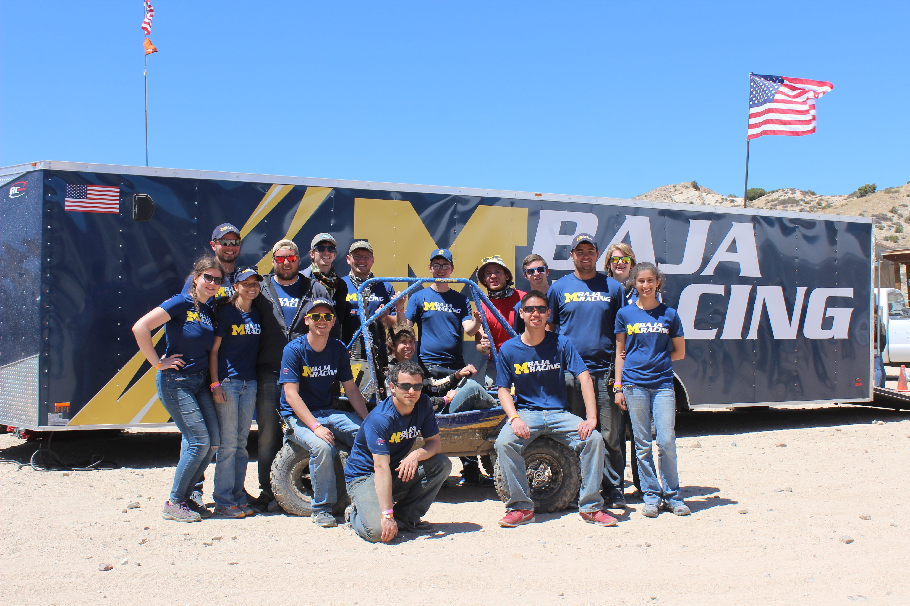
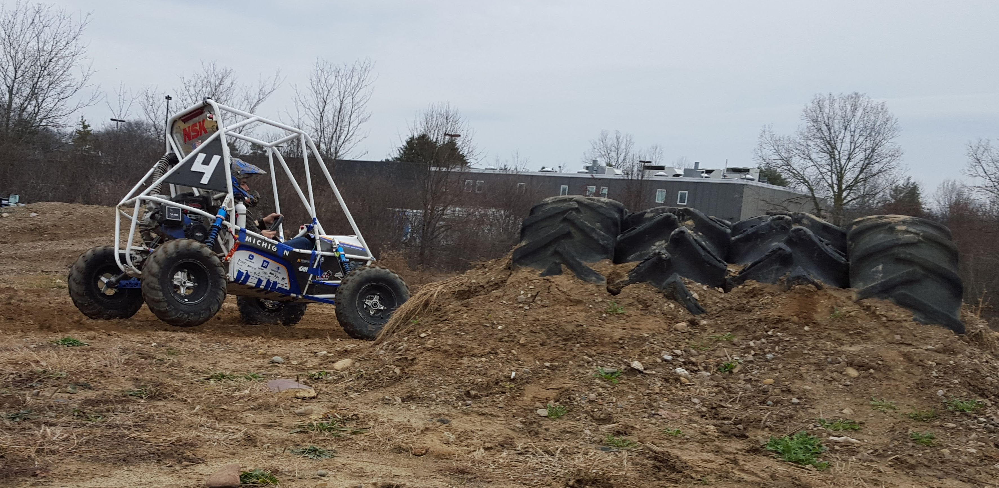
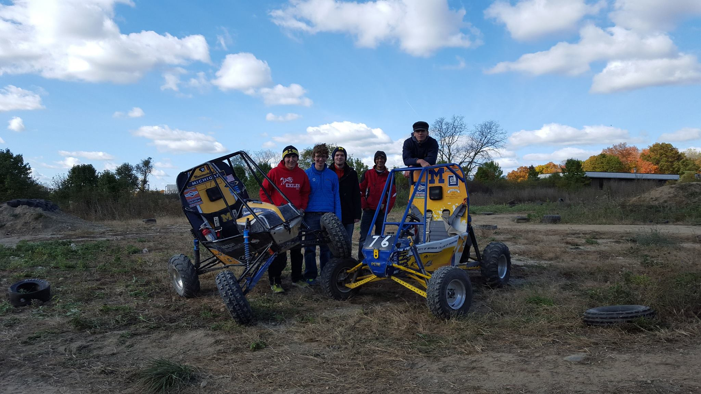
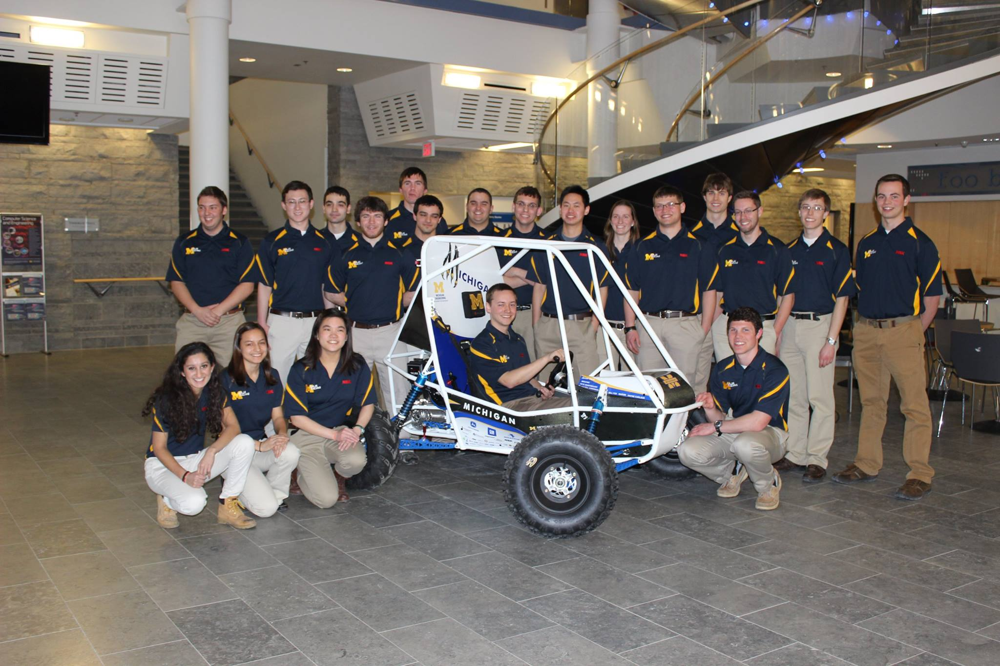
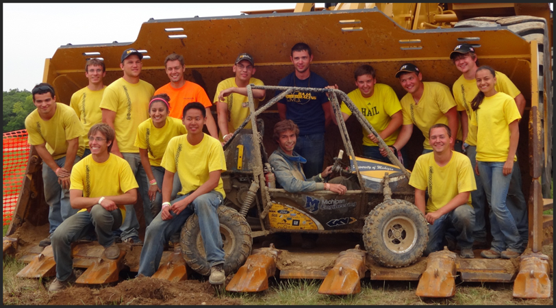
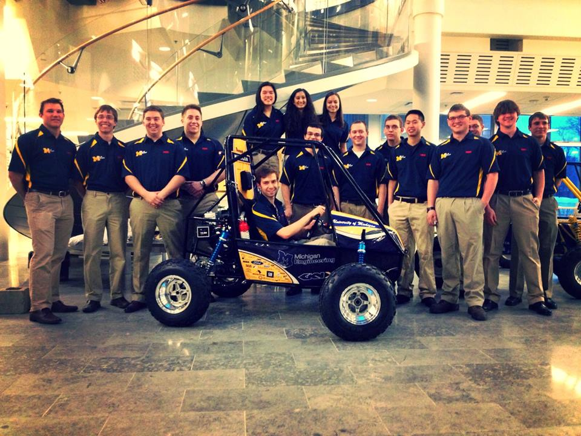

4th Quarter Update
Friends of Michigan Baja Racing:
I hope this note finds you enjoying the start of summer. If you've been following along on our social media, you'll know a lot has happened after the third quarter update in early April. Since then, we've spent multiple long weeks testing, breaking, fixing, and tuning every part of the car. The early focus was suspension and frame loading, where we spent lots of time on obstacle-dense courses similar to those at competition, which also offered great driver training. Afterwards, we focused on tuning, both of the suspension and our custom Continuously Variable Transmission (CVT), a staple of our car to which we attribute a lot of our high performance. With an entirely new design of the CVT's driver clutch along with endless tuning, we achieved a 100' acceleration time about 0.1 sec faster than the 2015 vehicle, an already fast car.
The 2016 season marked the 40th anniversary of Baja SAE, and we again attended all three North American competitions. This allowed us to compete with the best schools in the world and really test every aspect of our car and team across varied terrain. Below is a summary of our performance at each event.
Baja SAE Tennessee Tech
In late April, during our busy finals studying period, we headed to Tennessee Tech's Hyder-Burks Agricultural Pavilion in Cookeville, TN for the first competition of the year. With 18 members in attendance, this was the most heavily-attended competition in our team's known history, a representation of our focus on recruiting for team growth. We attended an event here in 2013, so we had some idea of what to expect. Through the first two days of "static events" in sales presentation, design presentation, and prototype cost, we ended up with some of our best scores in recent team history, including a win in the design event - a result of our dedication to detailed design and analysis on so many components of the vehicle. Day two consisted of acceleration, suspension & traction, maneuverability, and a one-of-a-kind sled pull event. The sled pull is normally only at one event each year, and consists of a miniaturized sled, similar to that seen in a tractor pull competition. Our many long days and nights of suspension and CVT tuning really paid off in the acceleration and maneuverability events, where we took 1st and 2nd place, respectively. The four-hour endurance race concluded the competition the following day. The Tennessee endurance track is known to be one of the fastest races in the rotating three-year schedule, and this again is where our significant design work really paid off.
In Tennessee, our car weighed in at 282 pounds, making it the lightest car there, and the lightest car we have ever built. This really showed on the track, as we were able to pull past competitors with ease. Unfortunately, due to some unforeseen circumstances in manufacturing, the upper ball joint pulled out of the new aluminum links we designed this year, sending us out of the race for repairs. Additionally, a trailing link broke from (we think) an impact with another vehicle. Due to the quick-thinking and incredible work of our pit crew, we were back on track within minutes of these failures.
In the end, we received a respectable 4th place overall finish. We were happy with how this turned out, but, as always, we're looking for more. We knew we could do better at the following two competitions, and spent the better part of the next month redesigning, manufacturing, testing, and tuning the car.
Event Placings
- 1st: Design Presentation, Acceleration
- 2nd: Prototype Cost, Maneuverability
- 3rd: Sales Presentation
Baja SAE California
For the first time in 20+ years, the competition series headed to California, at the Quail Canyon Motocross Track in Gorman, CA. As the Baja vehicles are loosely based on those that race in the Baja 500 and 1000 events in the Baja California Peninsula of Mexico, this event was about as real as it gets for us. Terrain was dry, sandy, and dusty for all the events at the competition. We made the 40+ hour drive from Ann Arbor, and met with some of our teammates who flew into the area, to bring a total of 16 students in attendance.
After a day of exploring Los Angeles, it was time to compete. With our finish in Tennessee, we were conscious of every point in every event, in order to stay in contention for the season victory. Static events again went well. We revised our design presentation in order to stay ahead of increasing competition from other teams, and luckily we were again able to take first place in that event. In our CVT tuning before the competition, special focus was placed on low-end performance, such as that needed on hills. This turned out to be very valuable for the hill climb event the following day (which replaced sled pull). Dubbed "the Himalaya" by locals, this hill was by far the steepest and longest hill we've seen at competition to date. Making it more challenging was the terrain - mostly loose sand. The extensive tuning paid off, as we were one of only two teams able to make it to the top of the hill, yielding a 1st place finish. Additional dynamic highlights included a 1st place in acceleration by a surprisingly large margin, and also a 1st in maneuverability. The day three endurance race was critical for us - in order to stay ahead in points we couldn't have any failures that took us out of the race. With over four hours of solid driving, we ended up with a 2nd place finish in the race and no car failures.
In late April, during our busy finals studying period, we headed to Tennessee Tech's Hyder-Burks All of those excellent event finishes resulted in a 1st place overall for the team. We were ecstatic about this - being back in the running with the top teams for the season. Even more exciting however, was the overall points total. A theoretical 1000 points can be earned at competition, with up to an additional 19 point bonus for being on the lead lap in endurance and design finals positioning. We ended the competition with 1007 points - the most in any recent recorded history of the competition. Going into the final competition, we were in very close competition with three other teams.
Event Placings
- 1st: Overall, Design Presentation, Prototype Cost, Acceleration, Hill Climb, Maneuverability
- 2nd: Endurance
- 3rd: Sales Presentation
Baja SAE Rochester
The third and final competition was hosted by the Rochester Institute of Technology in Rochester, NY, both at their campus and the Hogback Hill Motocross track in Palmyra, NY. While the team attended an event there three years ago, no current team members were in attendance then, so it was new for all of us. We were warned of lots of mud at the track, and videos from previous events corroborated that. Luckily, the rain mostly held off, and the event had relatively little mud. We were within 30 points of the lead spot from the great results in California, so we again knew every point counted.
Static events in the first two days again went well, with a third straight design event win - a first for our team. While this is just one event among many at the competition, we hold it with high regard, because it represents the main goal of Baja - expanding on the engineering education we receive in the classroom. Even with our success in 2015, we decided to carry over very few designs from that vehicle to the 2016 vehicle, and that clearly paid off. For only the second time in competition history, there was a sales presentation finals event, where the top five teams presented their sales pitches to the entire competition and a set of judges for bonus points. Luckily, we made the cut, and ended up with 3rd in sales from this event.
Dynamic events also went well, with 1st place taken in acceleration and hill climb (by more than 1 second - a huge margin). The suspension and traction course was particularly challenging at this event - it included a teeter-totter obstacle which required a lot of quick throttle and brake control. Maneuverability included some elevation change on the side of the one of the jumps used in the endurance race, and we took 3rd. Heading into the endurance race, our closest competitor for the total season points was down by a margin of only two endurance race laps, so we again knew nothing could send us out of the race.
The sometimes muddy, sometimes dusty track proved to be great for our car. While taxing on our drivers, they and the car survived the full four hours, and we won the race by about half of a lap. Along with the points from the static and dynamic events, we ended with a 1st place overall for the competition.
Event Placings
- 1st: Overall, Design Presentation, Acceleration, Hill Climb, Endurance
- 2nd: Prototype Cost, Maneuverability
- 3rd: Sales Presentation
Dynamic events also went well, with 1st place taken in acceleration and hill climb (by more than 1 second - a huge margin). The suspension and traction course was particularly challenging at this event - it included a teeter-totter obstacle which required a lot of quick throttle and brake control. Maneuverability included some elevation change on the side of the one of the jumps used in the endurance race, and we took 3rd. Heading into the endurance race, our closest competitor for the total season points was down by a margin of only two endurance race laps, so we again knew nothing could send us out of the race.
With that, my time on the team has concluded, along with graduating seniors Jason Willig, Vincent Peng, and Travis McIntyre. Discussions have already started on where the team can improve and continue to grow in subsequent years. All four of us are confident in the direction of the team, and wish them all the best in the future. For the next year, you'll be hearing from captain Cal Salisbury, followed by an excellent team of some of the best engineers U of M has to offer.
Thank you, and Go Blue!
3rd Quarter Update
The third quarter of our season has been the busiest yet, with final manufacturing of the car, the unveiling event, and pre-competition testing highlighting many other team activities.
Recent Events
----Winter Baja----
As we have for the past few years that weather has permitted, we attended Michigan Tech University's Winter Baja event in Houghton, MI. Our team has grown in recent years, and this year's Winter Baja event represented that - we took a record 21 people. Making the trip along with us were four previous year's cars. The event was geared towards our newest members - both to show them what a competition looks like, and as a reward for the incredible contributions everyone has made to the new car. In all, everyone had a chance to drive, and four people even had a chance to eat pickled eggs as part of an interesting "dynamic" event. Winter Baja serves as a great way to attract and retain members for the continued future success of the team.
----Unveiling----
Thanks to everyone who came out to our third annual unveiling on March 7th. This year, we took a more formal direction with the event, and had some presentations before unveiling the new car. We had the honor of having University President Dr. Mark Schlissel, College of Engineering Dean David Munson, and GKN Driveline - Americas President Robert Willig with us to offer a few words, as well as a video message from Governor Rick Snyder. The car we unveiled represented thousands of student hours of work, and we are very happy with how it turned out. Even with the success in past years, we changed almost every component on the car in an effort to continue to increase performance. If you missed the reveal, you can catch the video highlighting some of our manufacturing this year here.
----Testing & Tuning----
Starting the day after the unveiling event, we began to prep the car for testing. With a full 6 weeks between unveiling and our first competition, we have been rigorously testing the car in every possible aspect to ensure high performance and reliability. Beginning with heavy loading at our test track, we were able to push the car to its limits and see where the weak points were. After a handful of design changes and remanufactured parts, we were back out on our test track, moving to driver practice and tuning. Extensive suspension and transmission tuning have ensured a predictable, fast car. Using data collected on the 2014 car earlier in the year, we were able to select transmission parameters such as a helix profile and start with a faster tune to improve from. From our measurements, this should be our fastest car yet!
Competitions
We will travel over a total of 6300 miles to and from our three competitions this year, wearing only a number 1 and a number 2 between them due to our great success in 2015. The 2016 competitions are as follows:
April 14th-17th Cookeville, TN. As in 2013, we'll be at the Hyder-Burks Agricultural Pavilion on Tennessee Tech University's campus. The 2013 course included some interesting features such as a river crossing and wide open spaces allowing the car to reach near top speed, so we hope it is just as exciting as last time.
May 19th-May 22nd Gorman, CA. This is a brand-new course for Baja competitions, so the playing field is level for all teams in this remote desert motocross track. A few of us had the opportunity to tour the track this past summer, and we're expecting a pretty dry, sandy course overall.
June 9th-12th Rochester, NY. On another repeat from 2013, we'll be heading to Rochester, NY, hosted by one of our best competitors, Rochester Institute of Technology. It was incredibly muddy last time, so it remains to be seen what this year's event has in store for us.
Looking Into the Future
We are always thinking about the team's future, and discussions about the 2017 car have already begun. Our team is instilled with a culture of innovation, and a forward-looking view of the car's development has, and will continue to be, a key to our success. As engineers, we're always looking to improve, and from the discussions myself and graduating seniors have been hearing, we're all excited to see what the future holds. Led by senior Team Captain Cal Salisbury with the support of incredibly dedicated returning members, I'm confident the team has many years of success to come.
I'll reach out once more with an update on our competition performance in June. Until then, thanks again for your support of our team. We couldn't do it without you!
2nd Quarter Update
The new year marks the completion of a large majority of the design work for the 2016 vehicle. We are super excited about the design, and the large amount of changes we have made from the season-champion 2015 vehicle. Almost every component of the 2016 vehicle underwent a thorough redesign, including entirely new transmission, frame, steering, and braking systems. In each case, efficiency was the overarching goal. Whether this meant reducing belt slip in the transmission, reducing aerodynamic drag of the firewall, or using lightweight material to reduce rotating mass in the gearbox, we believe this will all add up to large performance gains on the track. The integration of new materials and processes on this year's car allows the team to build upon lessons learned from this year into future years' vehicles. Even with our success in 2015, it is critical that we stay innovative as a team, and the 2016 vehicle looks to raise the bar for our competition yet again.
Design
The new year marks the completion of a large majority of the design work for the 2016 vehicle. We are super excited about the design, and the large amount of changes we have made from the season-champion 2015 vehicle. Almost every component of the 2016 vehicle underwent a thorough redesign, including entirely new transmission, frame, steering, and braking systems. In each case, efficiency was the overarching goal. Whether this meant reducing belt slip in the transmission, reducing aerodynamic drag of the firewall, or using lightweight material to reduce rotating mass in the gearbox, we believe this will all add up to large performance gains on the track. The integration of new materials and processes on this year's car allows the team to build upon lessons learned from this year into future years' vehicles. Even with our success in 2015, it is critical that we stay innovative as a team, and the 2016 vehicle looks to raise the bar for our competition yet again.
Three of the team's seniors completed a capstone Mechanical Engineering project during the fall semester, and presented at the College of Engineering's Design Expo. The project involved an entirely new transmission designed for tuning and testing outside of the competition. This unit was designed for simplicity in manufacturing, allowing time between tuning iterations to be dramatically reduced, and more parameters varied. Additionally, a host of sensors were integrated to allow belt slip to be quantified, adding significant insight into the performance of the transmission during tuning. Further work on this unit along with the team's custom dynamometer (a 2014 capstone project) will continue through the competition season. With data from this project, two more of the team's seniors will complete a second project involving preliminary design of an active cooling system for the transmission on our car.
Analysis and Testing
Utilizing industry-standard Finite Element Analysis and data collection tools, we have been hard at work analyzing designs before they are manufactured. Extensive drive time on the 2015 car at our test track in the past few months has allowed us to develop worst-case and routine load cases on our drivetrain and suspension members. This invaluable data was fed back into our analysis software to ensure our critical suspension and drivetrain members would withstand the abuses of competition. Suspension load data was even used to select critical tube sizes for the car's frame, a first for our team. Further testing to be completed at our local sponsors in January include fatigue load testing of our composite transmission lid and inertial testing of the 2015 vehicle.
Manufacturing
As you may know, we take great pride in the highly-custom nature of our cars, including manufacturing as many parts as we can in-house. Using the great capabilities of the Wilson Student Team Project Center, we have been hard at work manufacturing parts for the car. Machining of many drivetrain and brake components are nearing completion, as are many other components. The frame build is going along smoothly as well, with the goal of completing this a few weeks before our unveiling event in March, in order to leave time for powdercoating and final assembly. Panels and guards, steering, and suspension components are all also in various stages of manufacturing as well.
A special note here must be made for our in-kind sponsors. We could not make some of the competition-winning designs if it weren't for those that help us with manufacturing processes that cannot be done in-house. As an example, the conventional machining processes for our gears are completed in-house, but then they must go to three different sponsors for wire EDM, heat treating (x2), and hobbing. For all of you on this email, we greatly appreciate your support!
Competition Preparation
While the three North American competitions are still a few months away, preparations for them are beginning now. At competition, an entire day is dedicated to "static" events (where the car isn't driving), including the sales presentation, cost report, and design presentation. These emphasize the engineering-design nature of the competition, outside of just the car racing. The sales presentation involves a ten-minute presentation to a hypothetical investment firm or manufacturing company, who we would work with to sell 4000 units of our Baja vehicle a year. We have begun preparing for this event, along with the design presentation and cost audit, and work will continue on these through the start of competitions in April.
Upcoming Events
While we will be hard at work manufacturing in the shop, there are a few events we're looking forward to in the third quarter of the season.
- Winter Baja: February 13th, Houghton MI. This time, we will be bringing four of our previous cars to Michigan Tech's snow-filled Baja course. Winter Baja is really for the newer members - they get to see a mock competition, and get a chance to drive Baja cars in a fun setting.
- Unveiling: March 7th, Ann Arbor MI. More details will be sent out as this gets closer, but be sure to mark your calendars. This year's unveiling promises to be the best yet!

1st Quarter Update
Past Season Recap and Goals for '15-'16
As you may know, the 2014-2015 season was the most successful in the team's history. We placed 1st in two competitions and 2nd in the other, leaving us with a 1st place overall season trophy. Additional highlights included a trip to the design finals event in all three competitions, several first place dynamic event performances, and even a podium finish in the sales presentation event. This was in large part due to the support of all of you, and for that we are extremely grateful. That success has encouraged us to have an outstanding result this year, gaining points against competitors where we can, and continuing to improve our static and dynamic event performances and innovate on the car's design. We have high goals for this year's car, team, and competitions - we're going for the overall season championship again. And, from our current progress and past performance, I am confident in the hard work of our team to make that happen.
We are again registered for all three North American competitions:
- Baja SAE Tennessee: April 14-17, 2016 -Cookeville, TN
- Baja SAE California: May 19-22, 2016 -Gorman, CA
- Baja SAE Rochester: June 9-12,2016 -Rochester, NY
We have expanded our base of support in both in-kind and monetary sponsorship to bolster the goals listed above. New manufacturing and finishing processes that we are unable to do in-house allows us to expand the possibilities of our designs. Furthermore, added monetary support allows for purchase of needed data acquisition materials, structural materials, and general funds for our continually growing team.
'15-'16 Car Design and Manufacturing
Even with last year's success, we are revisiting the design of nearly every component on the car to ensure maximum performance of the new vehicle. The design of the 2016 car is coming along smoothly, and with about 75% of the car designed in CAD, we are on schedule to complete design work by the end of the year. Our overarching theme in the design of this year's car is efficiency: in component mass, rotating inertia, driveline power transmission, and manufacturing time. To this end, we spent a significant amount of time this summer and fall collecting data on previous cars and analyzing mechanical design with more detail than in past years. On some key places in the car, a change in material and structural design was a large contributor to reduced mass and increased performance.
Where we can, we are designing for increased manufacturability of components, which leaves more time for detailed analysis work and full vehicle testing to validate our designs. Our experienced hands-on team is expanding upon our knowledge in CNC machining and other processes to further decrease manufacturing time and increase quality of our parts. With even more custom parts slated for use on the new vehicle as compared to previous cars, this is critical to our success.
Driver Training and Testing
We are additionally putting a big focus on driver training and past vehicle data collection before weather prevents us from doing so locally. Taking past cars to our local test track, as well as the Midnight Mayhem offseason competition in Louisville, KY, we have put several hours of drive time in across various terrain. The purpose of these drive sessions are twofold: analyze and compare driver performance, and collect loads on many of our structural components. This data will feed back to the design of this year's car and drive time will improve our on track performance this year, with new drivers in most of the events at competition.
Recruiting and Team Events
In order to ensure the success of our team longer term, the team attended several recruiting and outreach events on and off campus this fall, including the Woodward Dream Cruise, Northfest, Festifall, Escapade, and even the first ever E-rade. Through these events, we have gained a significant number of dedicated students from all class levels who have already become very involved with the team. We are excited to continue to train and mentor these students this year to keep them enthusiastic and encouraged. Taking a break from design and manufacturing, on a Sunday in the middle of October we had several new members drive the team's 2012 and 2014 cars at our test track (scroll down for a picture). Additional events such as CAD and machine trainings and social events are aimed at new member retention.
Looking Ahead
As we exit midterms and the career fair/recruiting season, we will begin to finalize several designs for manufacturing. Working with our local in-kind sponsors, we will be completing manufacturing on several new parts to test on previous cars at upcoming driving events. This week marks the start of frame welding, beginning with the main roll hoop. The team has already been hard at work making parts for the frame's jig, which holds tubes and key suspension points to ensure our frame closely matches our CAD design. Additionally, machining of parts for our new gearbox, Continuously Variable Transmission, and axles will begin in earnest starting this week.
If you have not yet seen our 2014-2015 season video, you can check it out here. Thanks to Pat Connolly for putting this together.
4th Quarter Update

The 2015 competition season has drawn to a close, it has been one in which the team has continued its past success, and improved upon every aspect of competition and the vehicle. The rest of this update goes into more detail of our competition performance.
Competitions
----April 9th-12th -Auburn, AL----
- Acceleration - 1st
- Maneuverability - 2nd
- Hill Climb - 3rd
- Cost - 6th
- Design - 1st
- Overall Dynamics - 3rd
- Endurance - 3rd
- Overall - 1st
Luckily for us, the first competition this year took place two weeks before final exams. Thus, after five weeks of rigorous vehicle validation testing, we packed up and drove down to Auburn to the National Center for Asphalt Technology, the same location the team traveled to back in 2012.
Slowed down by some severe weather, the first day included a technical inspection with a few small hiccups, later passed easily. It also featured the design presentation. The team made design finals at this first competition and made a very strong presentation, good enough to earn first place. A team goal for the year was to make every design finals event. Dynamic day was a great opportunity to show off the time spent tuning and tweaking every aspect of the vehicle. This was shown by our first place acceleration run and our strong showings in the other events. The endurance race proved to be a great validation for the vehicle, shaking loose our CVT cover three separate times. This was the only issue the car hard during the race, still able to finish in third place despite losing time for the fix.
The first place finish in this event opened the season strong, giving us a definitive advantage in the overall title, the Mike Schmidt Memorial Iron Team Award.
----May 7th-10th -Baltimore, MD----
- Acceleration - 2nd
- Maneuverability - 3rd
- Hill Climb - 1st
- Design - 2nd
- Sales - 5th
- Suspension & Traction - 4th
- Overall Dynamics - 1st
- Endurance - 8th
- Overall - 1st
A new location for the competition series, the Maryland event was located on a motocross track, an optimal location for an event that promotes speed and high performance. Once again, the first day brought technical inspection - passed on the first try - and a design presentation where the team made its second design finals of the year. This time, however, the weather cooperated and allowed the rest of the first day and the entirety of dynamic day to go off without a hitch. The team again had a very strong dynamic performance. The first overall dynamic finish was an effect of top 4 finishes in all the dynamic events. The last day, endurance, was another great test with many teams staying in very close contention. Our performance was slightly hindered by a brake light connection, causing some lost time, yet still giving us a strong 8th place finish in the event. Overall, we still finished strong in second place at the event.
This finish set up for a very close race for the Mike Schmidt Memorial award, and would need to be decided at the final competition in Oregon. Cornell and our team were separated by a very low number of points, so focus on how to gain the extra points was at an all-time high.
----May 27th-30th -Portland, OR----
- Acceleration - 1st
- Maneuverability - 5th
- Hill Climb - 1st
- Rock Crawl - 10th
- Manufacturing Cost - 3rd
- Design - 3rd
- Sales - 3rd
- Overall Dynamics - 7th
- Endurance - 1st - With Fastest Lap
- Overall - 1st
The team made the long trek out to Portland in late May. It being summer, we turned the trip into a fun, destination road trip, visiting attractions along the drive on our way to and from Oregon.
Onto the real reason to go to Oregon... On "day zero" we had our sales presentation, and a new part of competition was the sales finals event, extra time for the top teams to present their business pitch and gain more points to set themselves above. We were fortunate enough to be chosen for this, making it a new experience for us. It was business as usual for the first day, passing technical inspection on the first try without any issues, and once again making design finals. This marked the third design finals event made this year, checking off one of the main competition goals set by the team. Dynamic day was once again highlighted by a first place acceleration finish, and top ten finishes in the rest of the events. To close out the competition once again, we knew we needed a strong finish in endurance to give us good position for the Iron Team Award. Well, our driver, Brandon Amat, was a machine for the four hours of endurance day and won the event outright, he was the only driver with that many laps and he set the quickest lap time of the event. With this finish, we earned first place overall at the Oregon competition.
The Oregon competition was the first competition that we have attended where we finished in the top 10 of each event in the competition. This was one goal that the team had set early also, making it a significant milestone to meet. The first two competition finishes paired with our first place finish in this last one (1st, 2nd, and 1st place overall finishes) gave the team sufficient points to be awarded the first place Mike Schmidt Memorial Iron Team Award, the North American championship of the series.
Even with our success from this past year, we are still looking to improve. We have already started development and training for the next year's vehicle. Since we are graduating only two members, we retain a large knowledge bank and dedicated team. Led by senior Justin Lopas, look for more big things to come from this team.
With the conclusion of this competition season, we would like to personally thank everyone who helped to make this vehicle and team such a success. From sponsors, to alumni, to parents, and to faculty, you are the reason this team functions so well and is able to maintain its success. This series gives us incredible experiences and opportunities as growing engineers that would otherwise be unavailable without you.
3rd Quarter Update
Recent Events
----Winter Baja----
We are very fortunate that Mother Nature cooperated for us this year and allowed us to make the trek up to Houghton, MI to attend Michigan Tech's Winter Baja event. In all, 16 team members attended, enjoying the track carved into the snow that blankets the campus. It was a great opportunity for new and old members alike to take a weekend off and enjoy ourselves. Everyone got a chance to drive, and we even took first place in the dynamic event (which was an interesting combination of driver swaps and pickled eggs)! Click here to watch a slideshow of some of the pictures and videos we collected.
----Unveiling----
For the second year in a row, we hosted an unveiling event for sponsors, alumni, friends, and family to showcase our vehicle before testing and competition. We would like to thank everyone that took the time to stop by UM's campus to see our vehicle on March 9th. Unbelievably, we were able to take advantage of an empty machine shop over spring break and completed assembly three whole days before our unveiling! We were itching to get out to our track to take advantage of the recent snowmelt, but a few days off were also a nice luxury to have.
----Vehicle Validation Testing----
Since team members were so dedicated and completed our running, driving car before unveiling, we were able to test immediately after the unveiling event. An improved test track setup greatly increased testing quality and allowed us to simulate events we anticipate seeing at competition this year. Such early, thorough validation testing increases our confidence in the car, and allows for plenty of tuning and tweaking time before competition.
Upcoming Events
----2015 Competition Season----
- April 9th-12th - Auburn, Alabama: We traveled here last in 2012 and expect to see very similar course settings. Course designers promise that the drivers will most likely want a mouthguard as they drive for the 4 hour race; some might call this a welcome change from the traditional course that is trying to break your car - we say bring it on! Luckily for team members, the first competition this year is long before final exam week - as opposed to in the middle of it last year - and many members have the opportunity to travel and experience competition.
- May 7nd-10th - BAJA SAE Maryland: A new location for the Baja SAE series, Mechanicsville, Maryland looks to be a very good place for a competition. We will be traveling here in early May to compete at Budds Creek MX Track, the first of two competitions of the year taking place at motorcross tracks - favoring speed and big jumps (two things we happen to enjoy as well). Taking place just after exams end, Maryland promises to be an exciting competition for all.
- May 27th-30th - Baja SAE Oregon: To close out the 2015 season, we will be making the cross-country trip to Portland, Oregon. Once again, this is a location from the 2012 season that boasts a similar track as the previous occurrence. Hopefully weather permits the competition to use the world-famous Washougal MX Track this time. This promises to be an exciting competition along with a road trip through some great mountain ranges to cap off the experience.
Make sure to follow us on social media as we post updates throughout each competition!
It is hard to believe that competition season is already almost upon us. Even though we are not quite there yet, discussions for the next Michigan Baja Racing vehicle and team have already begun. We seek to push the limit on innovation and the product development cycle for our competition series, striving to remain the leaders and best. The 2015-2016 team will be led by senior Justin Lopas with the support of a very experienced roster of knowledgeable returning engineers.
Stay tuned for the next quarterly and competition update summarizing the season's results!

2nd Quarter Update
Friends of Michigan Baja Racing: As we get settled into the new year, we bring to a close the second quarter of our vehicle development. Thanks to plenty of hard work and dedication over the holiday break, we have smoothly transitioned into the manufacturing phase of our season. This continued dedication is helping to ensure that we will have a well-built vehicle when competition season rolls around in April.
Recent Events
----Vehicle Development----
We believe the current design of the 2015 competition vehicle is very well suited to bring us success in competition, and as stated before it is time to move into our manufacturing stage. While some design work is still taking place, all major decisions have been made, and the majority of design work is complete. We are lucky to have a multi-talented team that can make this transition so well each year. And yes, it is contagious: we have again recruited a class of new members that are sure to keep the team strong in coming years.
----Chrysler Event----
During the first week of January, the team travelled to the Chrysler Headquarters and Technology Center in Auburn Hills, MI to display the 2014 competition vehicle, and discuss our designs in preparation for the 2015 competitions. This was the team's first formal design review event in recent history, and we were very happy to take advantage of the professional opinions and advice offered to us.
Upcoming Events
----Winter Baja Race----
Due to extreme weather conditions, we were unfortunately unable to attend the competition held by Michigan Technological University up in Houghton last February. This event provides a relaxed racing environment and is a great opportunity to introduce newer members to what a baja competition is really like. This year we are hoping Mother Nature will be on our side so that we can load up our trailer and make the trek to the Upper Peninsula for the Winter Baja Race on February 21st. This will be a good chance for all members, both old and new, to take a break and enjoy this great weekend.
----Vehicle Development----
As is every year, our motto from here on out is "manufacturing and time management." This year we are planning on using our spring break as testing time, rather than building time. In order to do so, we're aiming to complete our vehicle around March 3rd, giving us at least four days of quality testing time while taking a break from classes. While this is an aggressive schedule, I do believe that this team of hard-working engineers has it in them to meet this deadline.
----Unveiling----
We held our unveiling on March 9th. This is the earliest in recorded team history that the car has been fully assembled. Thank you to all the sponsors, family members, and friends who came to see the result of our hard work!
Stay tuned for more updates from the team!
1st Quarter Update
Friends of Michigan Baja Racing: This marks the first checkpoint of the 2014-2015 season. So far, the design and planning of the new vehicle has been an exciting time for all members, both new and returning. With all members stepping up and putting forward a high level of effort, we have confidence that Michigan Baja Racing will once again have a very successful year.
Recent Events
----Summer Activities----
During the summer, team members spent nearly every weekend focusing on formulating team goals, manufacturing parts in order to run tests on old cars, and rebuilding our trailer. After many years of wear-and-tear our trailer was showing signs of aging and a need for refurbishment. So, over the course of many weekends, we made it feel brand new again. Additionally, we placed instrumentation on last year's car and collected data that we can use while designing the car for our upcoming race season. We also loaded an old baja car into the bed of our truck and drove down to the Woodward Dream Cruise. Like always, this was a fun opportunity to get out of the shop and show off our hard work to the community; hopefully you may have seen us there!
----Louisville SAE Midnight Mayhem----
For the first time in team history, some members of the Michigan Baja Racing Team traveled to Bedford, KY to attend "Midnight Mayhem," an unofficial Baja SAE race held by the University of Louisville Baja SAE team. For this event, two cars were taken: one was instrumented and used for data collection, and the other was used as a mode of driver training.
----Recruitment----
The Michigan Baja Racing Team prides itself on representing all class levels on campus and passing along knowledge to younger members to help ensure continued success. Once again, we attended every recruiting event possible on campus. This paid off for us; our Monday meetings are now packed full with prospective members! We begin each of these meetings with a brief presentation about a particular aspect of a baja car so that new members are able to transition smoothly into being a part of the team.
Upcoming Events
----Community----
Homecoming festivities for the University of Michigan start on Friday, October 31st and we are attending a "Meet the Student Teams" event. This event will give us a chance to talk to and network with alumni from the College of Engineering - a fun and valuable experience.
----Vehicle Development----
At this point in our design schedule major design decisions have been made and design of all main components will be finalized within the next couple of weeks. We have recently received our bent and heat-treated frame tubes, so the roll cage welding process will begin shortly. Data collected from vehicle testing over the summer and at Midnight Mayhem has helped us to improve our understanding and accuracy of the load cases we use for analysis of our components.
Please take a few minutes to check out our sponsor video from this past year. A big thank you goes out to Pat Connolly for putting the video together for us.
Stay tuned for the next update and big things to come from the Michigan Baja Racing Team!

4th Quarter Update
The 2014 competition season has concluded, and it has been an exceptional year for the Michigan Baja Racing Team.
Competitions
----April 24th-27th -El Paso, TX----
- Acceleration - 1st
- Maneuverability - 1st
- Manufacturing Cost - 1st
- Suspension & Traction - 9th
- Design - 4th - Made Finals
- Overall Dynamics - 2nd
- Overall - 4th
After a rigorous month and a half of testing, breaking, fixing, and repeating, the team juggled their final exam schedules and made the multi-day drive to El Paso, TX. With exactly zero traces of mud, the El Paso competition was a bit of a deviation from what the Michigan Baja Racing Team is generally used to. Although the 2014 season was particularly dusty as a whole, this competition proved notable for the literal dust storm during the endurance course walk prior to endurance day. The first two days of competition rolled by smoothly, with the car passing the technical inspection on the first try with no major issues. The team also made the design finals event to be able to further elaborate on the design of the vehicle. A team goal for this year was to place in all three design finals events at the competitions.
Dynamic Day provided an opportunity to show competitors the true capabilities of the 2014 Michigan Baja Racing vehicle. In particular, we took 1st in the acceleration event with a 0.2 fewer seconds on the clock than the next closest team, a substantial margin in this event. We also claimed 1st in maneuverability, demonstrating that our design changes from 2013 provided what we were intending to achieve. Our endurance race performance was unfortunately marred by a couple breakages, although we were able to post the fastest lap time on this day. Taking 4th in this competition, we were once again seated well to contend for the North American overall title, the Mike Schmidt Memorial Iron Team Award.
----May 22nd-25th -Pittsburg, KS----
- Acceleration - 2nd
- Maneuverability - 2nd
- Manufacturing Cost - 2nd
- Design - 4th - Tied
- Overall Dynamics - 6th
- Endurance - 2nd
- Overall - 2nd
The time after the El Paso competition allowed the team to finish up with final exams, fix damaged parts, and iterate upon other parts in order to maximize performance. On the morning before the competition, we packed the trailer and departed for Pittsburg, KS. The team had been to this site 3 years prior, and we looked to improve substantially over our previous showing. Upon entering the town, it was easy to see that Pittsburg holds the SAE Baja event in great regard, and on the first night of the competition, several blocks in the heart of its downtown were cleared to make way for a Baja Car Show - each team brought its vehicle to Main Street to display, and several hundred people from around town showed up to meet the teams. It was a unique event, and we appreciate the city of Pittsburg for accommodating us so well.
The second day of competition was once again business as usual with the technical inspection presenting minimal issues. Our design presentation went quite well like before, however, a much-reduced number of teams were admitted into design finals compared to the previous competition. Although we did not make finals, we received some compliments and very valuable advice from the head design judge on our vehicle design.
Dynamics and endurance for this competition had its ups and downs. We placed well in acceleration and maneuverability once again with acceptable scores in the other events. Endurance saw a little trouble with a roll on the first major jump on the endurance course. Although we needed to receive a frame inspection on the spot, we fortunately did not have to make any fixes, and we were back in the race after the leading teams had put in only two laps on the short course. Throughout the remainder of the race, we steadily climbed from the back of the pack all the way up to second place, just barely one lap behind the leader. Our strong performance at this competition awarded us 2nd place overall and 1st in the current standings for the Iron Team Award, however, it was clear that it was a very close battle between ourselves, Rochester Institute of Technology, and Cornell. The coming Illinois competition would certainly be the deciding factor in the national title.
- Acceleration - 1st
- Hill Climb - 2nd
- Rock Crawl -9th
- Manufacturing Cost - 1st
- Design - 3rd - Made Finals
- Overall Dynamics - 3rd
- Endurance - 7th - With Fastest Lap
- Overall - 4th
We were fortunate that major fixes after Pittsburg were not necessary, so after a week and a half of minor adjustments and suspension tuning, we made the short trip to Peoria, Illinois for the final competition of 2014. We had been to this site in 2011 as well, but this time, we would certainly be much more competitive. The first two days were once again fairly straightforward with only minor issues in the technical inspection. We were able to make design finals once again, and making 2 of 3 design finals allowed us to achieve most of our team goal. Much to our surprise, however, was our placing of 3rd in the design event. All teams in design finals exhibit a very high level of performance and attention to vehicle design, and it was an honor to be able to come out in the top tier.
It was a strong Dynamic Day for Michigan Baja Racing, taking 1st in acceleration (by approximately 0.3 seconds) and putting in high scores in the other events. The Iron Team Award was going to be fully dependent on the outcome of endurance. We were once again a very strong performer in this race, although a couple of breakages lost us some time on the track. The car posted the fastest lap time once more and 4th at the competition, but we were dropped to placing 2nd for the Mike Schmidt Memorial Iron Team Award. Nonetheless, all of the top teams in the competition series had a very strong showing this year, and we are satisfied with this result.
Plus, adding up our team's finishing places...
2013: 6th + 1st + 4th = 11
2014: 4th + 2nd + 4th = 10
Always improving! We aim to perform even better in 2015, and intense design evaluations have already been occurring for some time. The team will be led by junior Jason Willig, and you can expect to hear big things from us in the coming years.
Third Quarter Update
Our third quarter has been marked by unwavering determination and dedication to get the 2014 Baja vehicle manufactured and assembled. We have now entered the fourth quarter, which primarily consists of testing and competitions as well as a lack of snowstorms (or so we're hoping).
Recent Events
----Unveiling----
We would like to extend our personal thanks to those who stopped by on March 10th to support and check out the completed 2014 car. The week leading up to the event was the University's Spring Break, but for most of us, this was not a time to relax; this was a time to take advantage of an empty machine shop and a lack of classes in order to finish the vehicle. As a result of the steadfast determination of the members of the Michigan Baja Racing Team, the car was ready for display at our first-ever unveiling event. More importantly, this meant that the car was ready for testing earlier than any other year in recent history, which we have seen to be critical to achieving a high level of competition performance.
----Winter Baja----
Unfortunately, we did not make the trip to Houghton for the Winter Baja event this year. Although we had planned to do so, an unexpectedly large snowstorm in the Upper Peninsula the night before the race forced Michigan Technological University to cancel the event due to safety concerns. We certainly intend to return next year with at least three cars barring any more weather issues!
----Testing----
Once the snow appeared to have melted permanently for the year, full-vehicle testing was able to begin immediately at our test track. In the measures taken to structurally validate the components of the vehicle, a handful of weak points were identified, and appropriate design changes have been made and partially implemented as of now. Our emphasis on tuning vehicle parameters has continued as well, with CVT (continuously-variable transmission) tuning occurring on the new car, the 2013 car, and the CVT dynamometer. With 3 weeks until the first competition, we will be continuing to validate designs as well as tune the car for optimum performance in order to remain in the top tier of vehicles like last year.
Upcoming Events
----2014 Competition Season----
- April 24th-27th - University of Texas - El Paso: Our '98 team may remember their El Paso competition, but this is the first time the competition has returned to this location in 16 years. Although it is right in the middle of Final Exam Week, we are all incredibly excited for this event given that the terrain is most representative of what might be expected in the much higher-powered Baja 1000 event. Contrary to most Baja events, this particular competition will most likely be mudless, requiring a somewhat-nontypical tire selection in order to maximize our performance. The endurance course is said to be designed to eliminate 60% of competing teams, so we need to ensure that our vehicle is durable enough remain on the track and continue earning points.
- May 22nd-25th - Pittsburg State University, Kansas: As we did in 2011, the team will be traveling to Pittsburg, KS to compete in the second competition of the SAE Baja series. We will be aiming to vastly improve our performance from 3 years ago at this site and continue to contend for the Mike Schmidt Memorial Iron Team Award - the award given to the team with the highest point total at the end of the competition season. On the first night of the competition, the town of Pittsburg will be hosting a car show featuring SAE Baja vehicles; we will be proudly representing U of M at this event while we prepare for the following days of competition.
- June 4th-7th - Peoria, Illinois: Once again like in 2011, we will be returning to Peoria, Illinois to wrap up the 2014 competition season. Since this is technically the "West" competition and Michigan placed 1st in last year's West competition, we will be representing as Car #1 - no pressure. The dynamic events and endurance will be held at Caterpillar, Inc.'s proving grounds, which should make for a very well-built and challenging course.
2014-2015 Development
Although we have not yet reached the 2014 competition season, discussions regarding the design and vision of the 2015 Michigan Baja vehicle have already begun. In order to continue to innovate and push the envelope in our competition series, it is essential to maintain a far-reaching view on the development cycle of future prototypes. This adds another level of complexity to managing our multi-faceted engineering project. The 2014-2015 team will be led by junior Jason Willig with the support of a deep roster of knowledgeable returning team members.